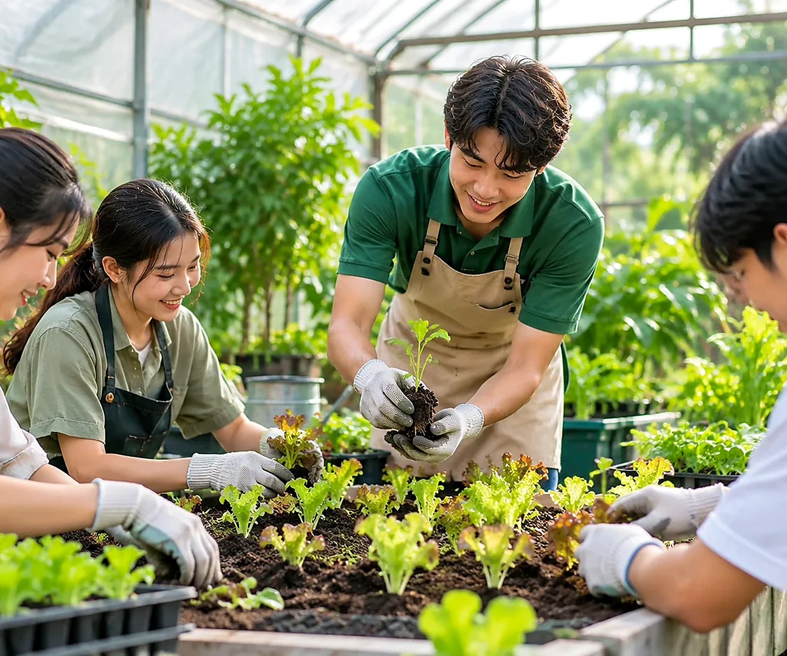
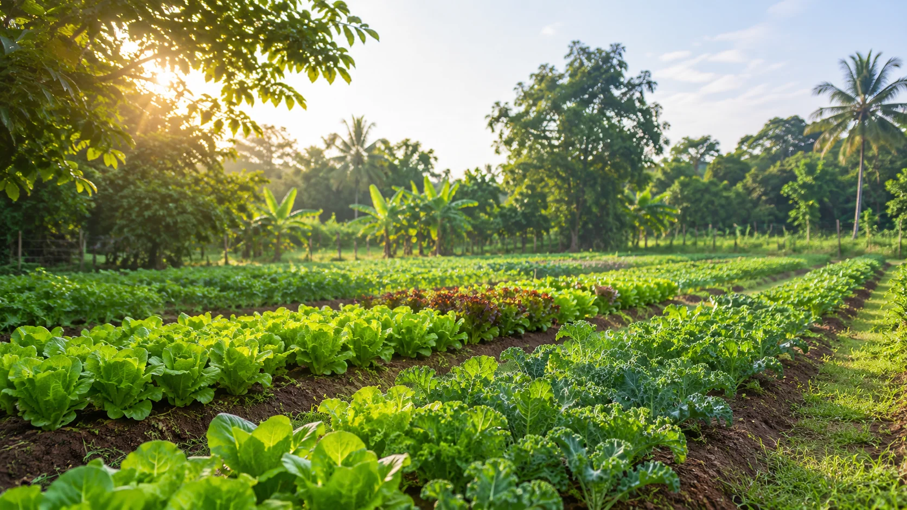

เข้าใจหลักการก่อน
อธิบายสั้น กระชับ และเห็นภาพ ว่าดินคืออะไร พืชต้องการอะไร และทำไมสารปรับปรุงดินจากเศษอาหารจึงช่วยให้ผักเติบโตได้ดี โดยไม่ใช้ศัพท์ยากเกินไป
CIVIO ORGANIC GROWING COURSE
เรียนรู้การปลูกผักตั้งแต่เตรียมดิน เพาะกล้า ดูแล ไปจนถึงเก็บเกี่ยว โดยใช้สารปรับปรุงดินที่ได้จากเศษอาหาร เหมาะกับคนที่อยากเริ่มปลูกผักกินเองหรือต่อยอดเป็นรายได้

03 / GROWING COURSEคอร์สอบรมปลูกผักอินทรีย์ของ CIVIO ออกแบบจากการปลูกผักจริงในฟาร์ม ไม่ได้เน้นทฤษฎียาวๆ แต่พาผู้เรียนเริ่มจากสิ่งที่อยู่ใกล้ตัวที่สุด นั่นคือ “ดิน” เพราะผักที่แข็งแรงและรสชาติดีเริ่มต้นจากดินที่มีชีวิต
เศษอาหารที่เหลือในครัวไม่จำเป็นต้องเป็นขยะเสมอไป เมื่อผ่านกระบวนการที่เหมาะสมจะกลายเป็นสารปรับปรุงดินที่ช่วยให้ดินร่วนซุย อุ้มน้ำดี และพร้อมต่อการเจริญเติบโตของพืช ผู้เรียนจะได้เห็นภาพรวมของวงจรนี้ตั้งแต่ต้นจนจบ แล้วนำไปประยุกต์ใช้กับพื้นที่ของตัวเองได้
ทุกหัวข้อเน้นการลงมือทำ ผู้เรียนจะได้จับดิน เพาะกล้า ย้ายปลูก และฝึกสังเกตต้นผักด้วยตัวเอง พร้อมถามทีมงานได้ทุกข้อสงสัย

สมดุลระหว่างความรู้และการลงมือทำ ปรับจังหวะให้เหมาะกับผู้เรียนแต่ละกลุ่ม
อธิบายสั้น กระชับ และเห็นภาพ ว่าดินคืออะไร พืชต้องการอะไร และทำไมสารปรับปรุงดินจากเศษอาหารจึงช่วยให้ผักเติบโตได้ดี โดยไม่ใช้ศัพท์ยากเกินไป
เตรียมดิน เพาะกล้า ย้ายปลูก รดน้ำ และดูแลจริงในพื้นที่ปลูก ได้ฝึกด้วยมือตัวเอง เพื่อให้กลับไปทำต่อที่บ้านหรือที่ชุมชนได้อย่างมั่นใจ
แต่ละที่มีแสง น้ำ และพื้นที่ไม่เหมือนกัน ทีมงานช่วยแนะนำการเลือกผักและวิธีปลูกให้เหมาะกับสภาพจริงของผู้เรียน ทั้งพื้นที่เล็กและพื้นที่กว้าง
เรียงจากง่ายไปยาก ให้ลงมือทำตามได้จริง ปรับเนื้อหาให้เหมาะกับกลุ่มผู้เรียนได้
ทำความรู้จักองค์ประกอบของดินที่ดี ดูว่าสารปรับปรุงดินจากเศษอาหารคืออะไร ช่วยดินอย่างไร และควรผสมหรือใช้ในอัตราไหนให้เหมาะกับชนิดผัก ไม่มากหรือน้อยเกินไป
เลือกผักที่ปลูกง่ายและเหมาะกับแสงและพื้นที่ของผู้เรียน ฝึกเพาะเมล็ด ดูแลต้นกล้าช่วงแรก และเลือกต้นกล้าที่แข็งแรงก่อนย้ายลงแปลง
เรียนรู้ระยะปลูกที่เหมาะสม ช่วงเวลาและปริมาณการรดน้ำ และการบำรุงต้นผักด้วยวัสดุอินทรีย์ที่หาได้ใกล้ตัว เพื่อให้ผักโตสม่ำเสมอโดยไม่สิ้นเปลือง
ฝึกสังเกตใบ ลำต้น และดิน เพื่ออ่านสัญญาณว่าผักขาดอะไรหรือกำลังเจอปัญหาอะไร รู้จักแมลงและโรคที่พบบ่อย พร้อมแนวทางป้องกันและแก้ไขแบบอินทรีย์
เรียนรู้ช่วงเวลาและวิธีเก็บเกี่ยวที่ถูกต้อง การทำความสะอาด การคัดแยก และการเก็บรักษาเบื้องต้น เพื่อให้ผักคงความสดและเสียหายน้อยที่สุด
สำหรับผู้ที่อยากต่อยอด จะได้เรียนแนวคิดการวางแผนปลูกให้มีผลผลิตต่อเนื่อง การคัดเกรด การจัดแพ็ก และการเล่าเรื่องผักอินทรีย์ให้ลูกค้าเห็นคุณค่า


ไม่ว่าจะอยากเริ่มปลูกผักกินเองที่บ้าน พัฒนาพื้นที่ว่างในชุมชน หรืออยากสร้างกิจกรรมเรียนรู้ให้โรงเรียนและองค์กร คอร์สนี้ปรับระดับเนื้อหาให้เข้ากับผู้เรียนได้

ไม่จำเป็นครับ คอร์สเริ่มจากพื้นฐานและเรียงเนื้อหาจากง่ายไปยาก
กรอกแบบฟอร์มติดต่อบนหน้าแรก หรือโทรหาทีมงาน CIVIO ตามช่องทางที่ระบุไว้ ทีมงานจะแจ้งรอบ สถานที่ และค่าบริการ
ได้ แจ้งจำนวนผู้เข้าร่วมและเป้าหมายกับทีมงาน เพื่อออกแบบเนื้อหาให้เหมาะสม
เหมาะครับ เนื้อหาครอบคลุมการเลือกผักและวิธีปลูกที่ปรับให้เข้ากับพื้นที่ ทั้งพื้นที่ขนาดเล็กและพื้นที่แปลงกว้าง ทีมงานจะช่วยแนะนำตามสภาพจริงของผู้เรียน
ไม่ต้องเตรียมอุปกรณ์พิเศษ แนะนำให้แต่งกายสบายๆ พร้อมลงมือสัมผัสดิน รายละเอียดการเตรียมตัวของแต่ละรอบ ทีมงานจะแจ้งให้ทราบเมื่อยืนยันรอบอบรม
คอร์สมีหัวข้อเรื่องการวางแผนปลูกเพื่อจำหน่าย การคัดเกรด และการสื่อสารกับลูกค้า เพื่อเป็นแนวทางเริ่มต้น ส่วนผลลัพธ์ทางรายได้ขึ้นอยู่กับพื้นที่ ชนิดผัก และการดำเนินงานของแต่ละราย
ติดต่อทีมงานเพื่อสอบถามรอบอบรม สถานที่ และรายละเอียดการสมัคร